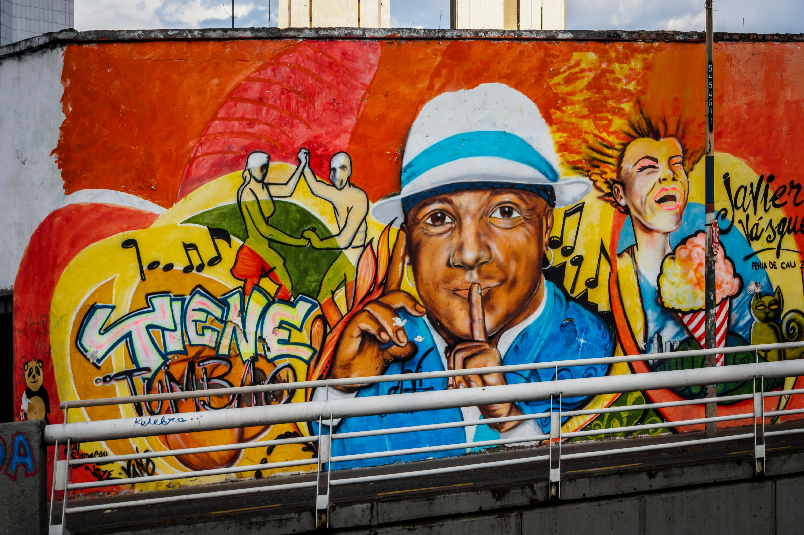
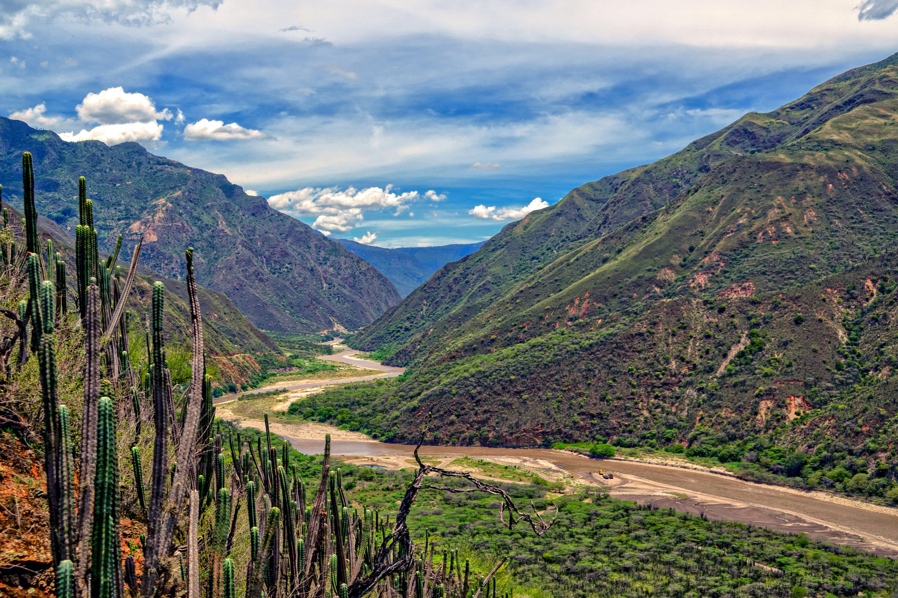

About Me
I am from South America, Colombia, and I love my country deeply. Over the years, I’ve come to realise that many people abroad still associate Colombia with drug trafficking and Pablo Escobar. This perception, often reinforced by films and media, doesn't reflect the reality of who we are.
Through this blog, I want to show the true spirit of Colombia — our rich culture, kind people, breathtaking landscapes, and the incredible progress we’ve made. Colombia is much more than its past. It’s a country full of colour, rhythm, resilience, and dreams. I hope this space helps others see it through the same lens of love and pride with which I do.
Politics in Colombia

Colombia's politics reflect a nation in transition — from conflict to peace, and from silence to civic expression. Since the 2016 peace agreement with the FARC, the country has made strides towards reconciliation, though tensions and inequalities persist.
Young people have become powerful voices for change, using protests, art, and digital platforms to demand social justice and transparency. Cities like Bogotá and Medellín now represent not only political hubs but also spaces of cultural resistance and hope.
To understand Colombia’s politics is to witness its resilience — a society learning from the past while striving to build a more inclusive and democratic future.
Nature & Biodiversity

Colombia is one of the most biodiverse countries on Earth, ranking first in bird and orchid species and second in plants, butterflies, and freshwater fish. From the Amazon rainforest to the Andes mountains, the Caribbean coast to the Pacific jungle, its ecosystems are incredibly varied and breathtaking.
Nature in Colombia is not just scenery — it is culture, identity, and life. Indigenous and rural communities have preserved deep connections with the land, offering visitors a chance to experience both stunning landscapes and ancient wisdom.
Exploring Colombia's natural beauty is a journey through waterfalls, cloud forests, desert dunes, and coral reefs. It’s a call to discover and protect one of the planet’s richest natural heritages.
Colombian Coffee Culture

Coffee is at the heart of Colombia’s identity. More than just a beverage, it is a cultural symbol and a way of life for thousands of farming families. The lush mountains of the Coffee Axis (Eje Cafetero) offer perfect growing conditions for high-quality Arabica beans, known for their smooth flavour and rich aroma.
Colombian coffee is not only enjoyed locally — it is one of the country's most important exports, reaching countries across Europe, North America, and Asia. Its global reputation has helped promote fair trade practices and sustainable farming, empowering rural communities and supporting the national economy.
Visiting a Colombian coffee farm is an immersive experience. From picking cherries by hand to tasting freshly brewed cups surrounded by green hills, it’s a sensory journey that connects visitors with the people and the land behind every bean.
Cities to Discover
Colombia’s cities are vibrant, diverse, and full of surprises. Each one offers a unique cultural experience, from historic architecture and culinary delights to modern innovation and natural wonders. Discover the spirit of Colombia through five key cities that capture the country’s transformation and charm.
Bogotá

Medellín

Cali
Known as the salsa capital of the world, Cali pulses with rhythm and energy. Its lively streets and dance clubs are perfect for immersing in Afro-Colombian culture. The city also offers lush natural spots like Cristo Rey and the Cali River, alongside a strong sports scene and delicious Pacific cuisine. Cali’s identity blends heritage, movement, and joy like no other.
Barranquilla
Home to one of the world’s largest carnivals, Barranquilla is a vibrant coastal city where Caribbean flavour meets Colombian pride. With music, dance, and cultural fusion, the city shines during its Carnival season. It also offers modern shopping centres, beautiful sunsets by the Magdalena River, and a proud legacy of artists, including global star Shakira.

Bucaramanga
Nicknamed the “City of Parks,” Bucaramanga blends green spaces with modern life. Located in the Santander region, it’s surrounded by mountains and is close to the impressive Chicamocha Canyon. With a growing gastronomic scene, strong universities, and warm climate, Bucaramanga offers a peaceful and progressive urban experience.
Colombia: 1990s vs Today

The Colombia of the 1990s was marked by violence, fear, and instability. Drug cartels, armed conflict, and political unrest painted a dark picture of a country struggling for peace. Many Colombians lived through a daily reality of uncertainty, curfews, and security checkpoints.
Today, Colombia tells a different story. While challenges remain, the country has made remarkable strides. Public spaces have been revitalised, tourism has blossomed, and cities once known for conflict are now celebrated for innovation, art, and resilience.
The change is visible in the streets, in the faces of young people leading social movements, and in the growing sense of national pride. Colombia is no longer defined by its past — it is shaped by its future and by those determined to rewrite its narrative.
Colombia of the Future

Colombia is embracing a future driven by innovation, sustainability, and inclusion. From the rise of tech hubs in Medellín to eco-tourism initiatives in the Amazon and the Sierra Nevada, the country is investing in long-term progress that benefits people and nature alike.
Young Colombians are leading movements for climate action, social equality, and cultural preservation. Entrepreneurship is thriving, with local solutions emerging in education, green energy, and digital access. The Colombia of tomorrow is being shaped by citizens who believe in creating lasting change.
For too long, Colombia has been reduced to a single narrative — one shaped by Pablo Escobar and the drug trade. But that image no longer defines us. The world is beginning to see Colombia for what it truly is: a land of breathtaking beauty, creativity, resilience, and joy. We want to be known for our music, biodiversity, literature, coffee, and our spirit — not for a past we are overcoming.
The future belongs to a Colombia proud of its roots and fearless in its dreams. And this blog is just one of many voices helping share that vision with the world.